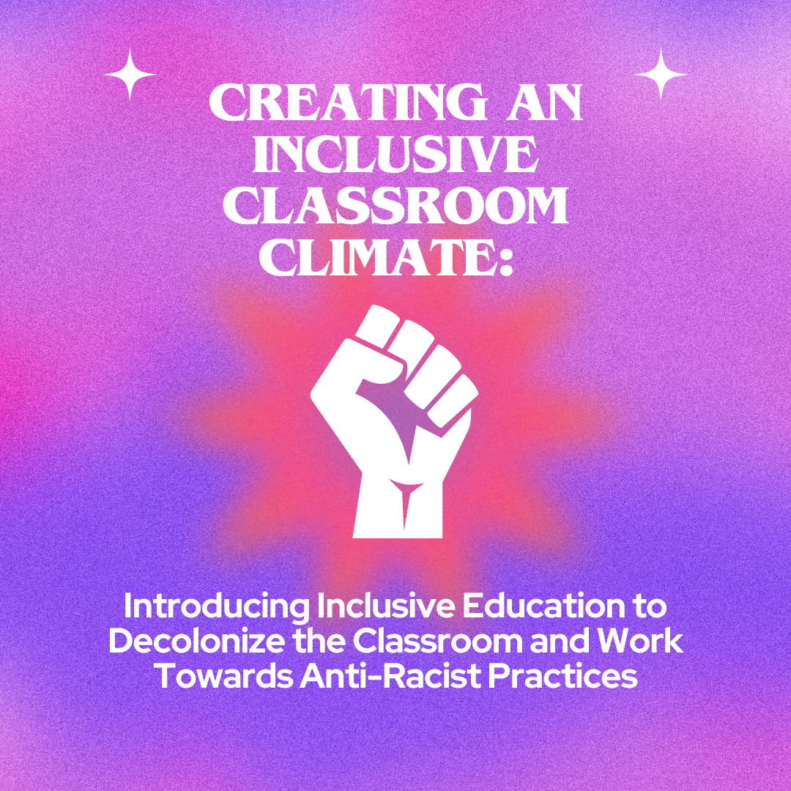

Trainings & Workshops
Creating an Inclusive Classroom Climate: Empowering Teachers for Anti-Racist Practices and Inclusive Education Training Course
After closely collaborating with past colleagues in the education realm to created an authentic learning experience in an asynchronous training, this instructional design artifact was created with a strong focus on the need for inclusivity in the classroom. In this self-paced course designed for K-5 general education teachers, participants will gain the knowledge and skills to create a more inclusive and supportive learning environment. Through reflective exercises, they will assess their classroom climate, identify areas for improvement, and implement strategies to foster inclusivity. With accessible resources, videos, and interactive tools, teachers will learn to acknowledge and respect diverse identities, employ inclusive language, and empower their students to find security, comfort, and voice in the educational space.
Graduate Assistantship Training Course

After closely collaborating with the Center for Academic Innovation to created an authentic learning experience in a sychronous and asynchronous onboarding training, this instructional design artifact was created in collaboration with members of the Center for Academic Innovation to help train future graduate assistants, as well as provide resources to help current graduate assistants complete their daily responsibilities within the organization. The artifact itself is a Canvas course packed with guidelines, assessments, and media that can be used to help graduate assistants navigate through their day to day tasks during work hours. Finally, this artifact helps to support graduate assistants receiving the certification and workshops that are required of them during their time as graduate assistants and also keeps them on track with deadlines to meet as they fill their hourly requirements and apply for renewal on a term by term basis.
Transparency in Learning and Teaching Workshop
After closely collaborating with the Center for Academic Innovation and reviewing goals of the different workshops already established, as well as investigating the potential needs for professional development for educators, TILT came to fruition to emphasizes empowerment in the learning experiences within the Canvas learning space. TILT focuses on the importance of developing transparent outcomes and objectivest that are presented with immense intentionality in virtual classroom spaces and aims to shape the perspective of educators to showcase the importance of developing TILT. The Transparency in Teaching & Learning transparency framework provides a mechanism for laying out the Purpose, Task, and Criteria for Success when designing assignments and assessments. This transparent, explicit approach helps deconstruct “unwritten” rules for academic achievement to set all learners up for success. This artifact was created and presented to guide professors explore how greater transparency can increase your students’ consciousness of how they learn and how your course activities support specific learning outcomes and academic growth.
Introducing Organizational Software Tools at Braata Productions

To help support the on-boarding process for Braata Productions, this artifact was created in CSE 504 in Rise Articulate to guide users through the different organizational software tools that are used at the company. The artifact itself goes through an depth look at each of the different communication and project management softwares, helps users set up their account, and gives them a full understanding of the use of each tool and how it is a relevant resource for each of the daily tasks within the company. The course itself is self paced where users are encouraged to explore at their own pace through the tutorial and independently on their own screen.
Life of an Asian Living with CKD: Interactive Cook Book

This virtual and interative way of peering at a cookbook helps to engage stuidents in a more learner-driven and self paced way that accommodates for learning variability through thoughful design that prevents cognitive overload, but promotes active learning. This artifact was created during CSE 508 as a way to create a gamified way for users to experience a virtual cookbook. Storyline Articulate was utilized to program interactive buttons that guide readers through the cookbook with a variety of hand drawn or created images that keep true to the pixel art digital theme of the game itself.
Braata Productions On-boarding Docket for TAs, Contractors, and Interns

After reviewing feedback and data from the needs of this nonprofit in regards to their onboarding needs, this site was created to help further support instruction and student learning for new members of the nonprofit through an onboarding process through this virtual training. This artifact was created during CSE 680 to essentially take retired artifacts and merge them into one all encompassing docket. During the creation of this artifact, redesign methods based on Gestalt Principles were utilized to create an all encompassing design for the organization that merges together the different onboarding dockets of multiple departments and open positions into one engaging space. Seeing as the organization had a challenging time structuring their brand in a way that allows for viewers to understand and fully absorb the knowledge presented in the prior pieces, several retired artifacts were taken to create a new space for learners to gain knowledge at their own pace and utilize the resource for their own purposes.
Games
Phoneme Graphing Mapping Prototype

Utilizing skills in coding within a game engine to create a tool that fosters independent learning in both a supplementary and interventional lens, this artifact was created during an independent study course based on Unity Real-Time Development Platform. This resource was created to support classroom teachers, parents, and tutors in finding interactive ways for students to practice building their phonics skills. This interactive game allows for users to virtually simulate encoding and decoding CVC words with interactive buttons, signaling colors to indicate vowels and consonants and features that mimic Phontas and Pinnell practices.